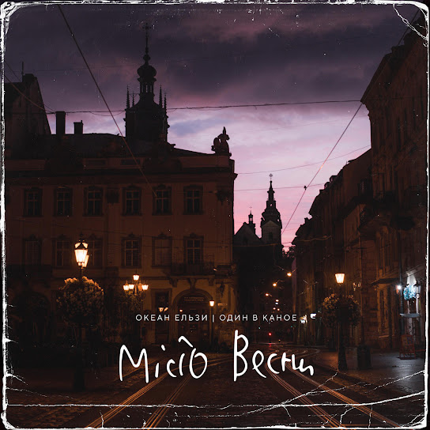
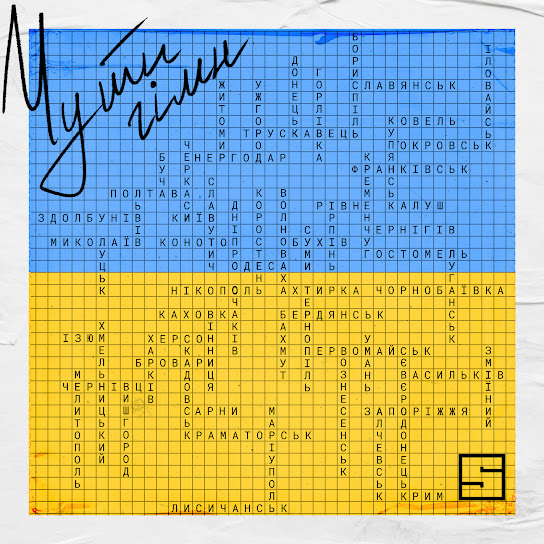

Біля серця
KOLA
01:55

Місто весни (feat. Один в каное)
Океан Ельзи
01:55
Чорне і біле
Зозуля
01:55

Чути гімн
Skofka
01:55
В Пустій Кімнаті
Yaktak, Jerry Heil
01:55
Гей, соколи!
Олександр Пономарьов та Mykhailo Khoma
01:55
Три слова
Kozak System
01:55
Пісня Сміливих Дівчат
KAZKA
01:55